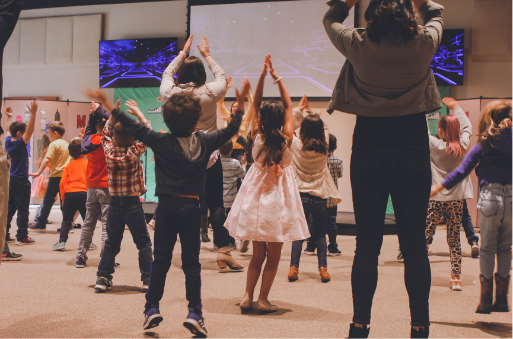

De Letter DOOS


Veel gestelde vragen ?
ETEN & DRINKEN
TURNEN & ZWEMMEN
SCHOOLUREN
Meest recente gebeurtenis

Altijd op de banken zitten is niet gezond!
Daarom hebben we 2x per week de banken langs de kant geschoven om even te bewegen. Het idee kwam origineel van juf Leen, zei heeft het voorgelegd en iedereen stond achter het idee. Niet enkel de leerkrachten maar ook de kinderen waren er voor te vinden. Door te bewegen krijg je warmer, en dat was in ons voordeel. We konden de chauffage zachter zetten, wat goed is voor minder te verbruiken.
Daarom hebben we 2x per week de banken langs de kant geschoven om even te bewegen. Het idee kwam origineel van juf Leen, zei heeft het voorgelegd en iedereen stond achter het idee. Niet enkel de leerkrachten maar ook de kinderen waren er voor te vinden. Door te bewegen krijg je warmer, en dat was in ons voordeel. We konden de chauffage zachter zetten, wat goed is voor minder te verbruiken.
augustus
3 augustus
We gingen met de kinderen op stap naar rozenbroek om leerrijke ontspanningen te ondergaan in het park.

6 augustus
Een bekende voetballer kwam langs om een speech te geven aan de leerlingen.
We gingen met de kinderen op stap naar rozenbroek om leerrijke ontspanningen te ondergaan in het park.
6 augustus
Een bekende voetballer kwam langs om een speech te geven aan de leerlingen.